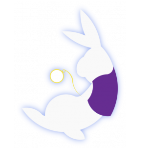
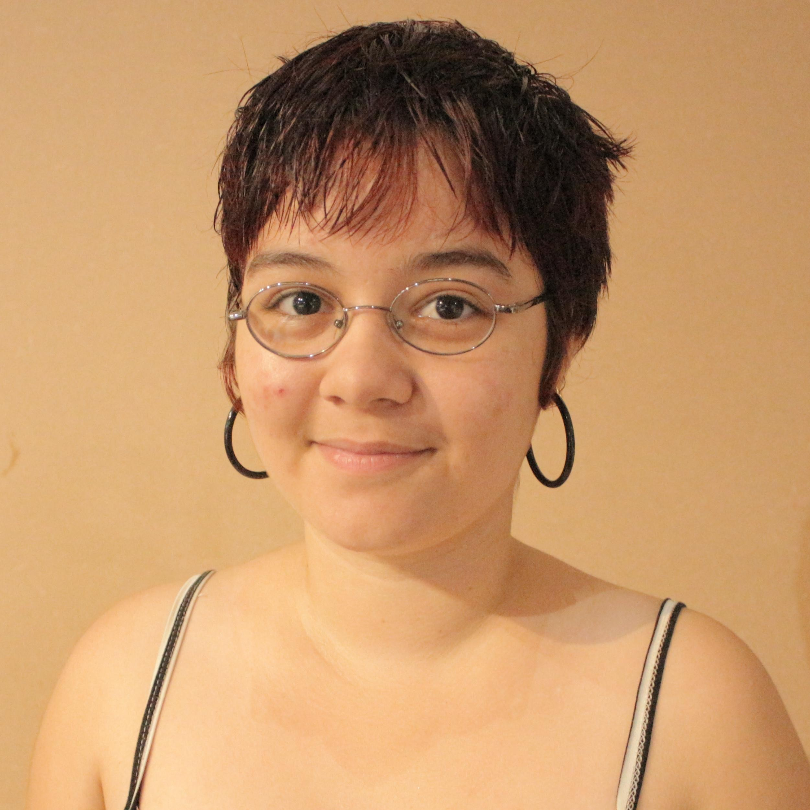

Grupos Envolvidos
 ALICE (Arts Lab in Interfaces, Computers and everything else) O Art Lab Interaction on Computer Experience (ALICE) desenvolve projetos com foco em tecnologias voltadas à arte digital, com projetos relacionados à geração de código através da criatividade e pesquisa, abrangendo diversas áreas como Computação, Música, Fotografia e Teatro.
Mòvere O Movére é um dos subgrupos do Grupo Transdisciplinar de Pesquisa em Artes Culturas e Sustentabilidade. Tem como principal objetivo desenvolver um processo eco-poético de treinamento do ator dançarino e da construção da cena espetacular. Como parte desse grupo, o Movére pauta sua atuação com base na linha de pesquisa em Artes cênicas, Performance Comunitária e Sustentabilidade do mesmo e é integrado por estudantes do curso de Teatro, os quais, sob a orientação de um pesquisador, desenvolvem ações de pesquisa (Iniciação Científica), Extensão (O projeto Arte e Sustentabilidade para toda parte) e ensino (promoção de cursos, vivências e oficinas ministrados por seus membros e por profissionais afins ao trabalho do grupo). Dedica-se prioritariamente ao estudo e à pesquisa do corpo em situação de representação, à corporeidade, às técnicas do ator, à cena e à Performance com o objetivo de desenvolver novas poéticas cênicas, técnicas e dramaturgias corporais baseadas numa cultura de sustentabilidade, de modo a criar uma nova eco-poética para o trabalho do ator-dançarino.
Integrantes
 Adilson Roberto Siqueira
Adilson Roberto Siqueira
 Flávio Luiz Schiavoni
Flávio Luiz Schiavoni
 Rogério Tavares Constante
Rogério Tavares Constante
 Aretha
 Aneliza Rodrigues Prado
Aneliza Rodrigues Prado
 Bruna Guimarães Lima e Silva
Bruna Guimarães Lima e Silva
 João Lucas Ruas Teixeira
João Lucas Ruas Teixeira
 Patrick Veniali da Silva
Patrick Veniali da Silva
 André Lucas Nascimento Gomes
André Lucas Nascimento Gomes
 Avner Maximiliano de Paulo
Avner Maximiliano de Paulo
 Carlos Eduardo Oliveira
Carlos Eduardo Oliveira
 Fabio dos Passos Carvalho
Fabio dos Passos Carvalho
 Frederico Rezende Ribeiro
Frederico Rezende Ribeiro
 Gabriel Lopes Rocha
Gabriel Lopes Rocha
 Igino de Oliveira Silva Junior
Igino de Oliveira Silva Junior
 João Teixeira Araujo
João Teixeira Araujo
 Luísa Lugon-Moulin
Luísa Lugon-Moulin
 Monge Gemon
Monge Gemon
 Thiago de Andrade Morandi
Thiago de Andrade Morandi